1004D40 engine - position on stand and remove
- Path
- Procedures > 10 ENGINE UNIT > 1004 ENGINE AND POWER UNIT > 1004D remove engine and wash > 1004D40 engine - position on stand and remove
- Kind
- repair procedure (removal / refitting; the operation number is the code)
- Applies to
- all engines; all production periods
- Interactive page
- https://sloeber94.github.io/elrnDB-fMltpl/en/#/2892328
Applies to: engines: 1.6 16v; all production periods
 Dismantling
Dismantling
 Reassembling
ReassemblingSupport the engine in order to work on it in safety.
1. Loosen the bolts fixing the air conditioning compressor drive belt tensioner.
2. Undo the micro-metric screw (2a) and the adjustment nut (2b) to release the belt tension.
3. Remove the air conditioning compressor drive belt.
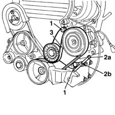
Applies to: engines: 1.6 16v; all production periods
1. Undo the bolt fixing the air conditioning compressor to the inlet manifold.
2. Undo the bolts fixing the rigid engine support to the cylinder block/crankcase.
3. Remove the complete air conditioning compressor, complete with rigid support and belt tensioner.
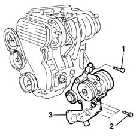
Applies to: engines: 1.6 16v; all production periods
1. Undo the bolts fixing the belt tensioner.
2. Release the belt tension, then remove the belt tensioner (2a), together with the alternator drive belt (2b0.
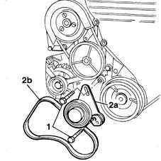
Applies to: engines: 1.6 16v; all production periods
1. Undo the fixing bolts.
Disconnect the alternator leads.
2. Remove the alternator from the engine.
 | Name | Connector |
|---|---|---|
- | Alternator |
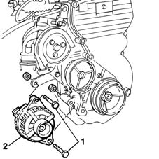
Applies to: engines: 1.6 16v; all production periods
Undo and remove the oil filter.
1. Position the inlet side bracket for supporting the engine whilst overhauling.
 | Name | Country |
|---|---|---|
1 | Bracket | 1.861.042.000 |
2. Fix it to the cylinder block/crankcase using the service bolts.
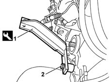
Applies to: engines: 1.6 16v; all production periods
1. Position the exhaust side bracket for supporting the engine whilst overhauling.
2. Tighten the bolts.
| Name | Country |
|---|---|---|
1 | Bracket | 1.861.042.000 |
Fit the engine on the rotating overhaul stand, fixing it with the service bolts.
Remove the engine support chains.
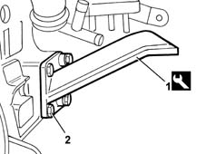
Applies to: engines: 1.6 16v; all production periods
Reassembling
DismantlingPosition the support chains in the special mounting points, checking that the engine is balanced.
Undo the fixing bolts and remove the engine mounting brackets on the rotating stand.
| Name | Country |
|---|---|---|
- | Bracket | 1.861.042.000 |
Fit the oil filter, tightening it manually.
Fit the alternator in the special housing and tighten the fixing bolts, but not fully.
Connect the alternator leads.
| Name | Connector |
|---|---|---|
- | Alternator |
1. Fit the belt tensioner.
2. Tighten the bolts.
3. Fit the alternator drive belt on the pullies.
4. Rotate the tensioning device, working on the hexagonal opening (1a), then check that the belt tension is correct using the tool (1b).
| Name | Country |
|---|---|---|
1b | Torque wrench | 1.895.762.000 |
 | Measurement | Value | |
|---|---|---|---|
- | check tension (daNm) | 52 - 67 |
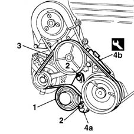
Applies to: engines: 1.6 16v; all production periods
Fit the air conditioning compressor complete with rigid support and belt tensioner.
Tighten the bolts fixing the rigid engine support to the cylinder block/crankcase.
 | Fastening | Component | Ø | Value (daNm) |
|---|---|---|---|---|
- | Bolt | ENGINE MOUNT TIMING SIDE | M10 x 1.25 | (engine side) 7 |
| Fastening | Component | Ø | Value (daNm) |
|---|---|---|---|---|
- | Bolt | ENGINE MOUNT TIMING SIDE | M10 x 1.25 | (engine side) 2.5 |
Tighten the bolts fixing the air conditioning compressor to the inlet manifold to torque.
1. Fit the air conditioning compressor drive belt.
2. Acting on the micro-metric screw (2a) and the adjustment nut (2b), tension the air conditioning compressor drive belt.
3. Secure the bolts fixing the air conditioning compressor drive belt tensioner.
Using a dynamometer, check that the belt tension is correct.
| Name | Country |
|---|---|---|
- | Torque wrench | 1.895.762.000 |
| Measurement | Value | |
|---|---|---|---|
- | check tension (daN) | 42 - 55 |
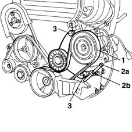
Applies to: engines: 1.6 16v; all production periods
Tighten the tensioner fixing bolts.
Remove the hooks and support devices positioned previously.
Applies to: engines: 1.9 JTD 8V; all production periods
Stand the engine on the bench.
Remove any wiring left on the engine.
Adjust the automatic belt tensioner with a wrench to slacken the tension of the single engine component drive belt.
1. Remove the single drive belt (1).
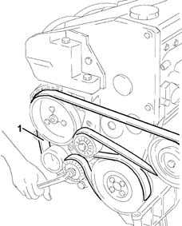
Applies to: engines: 1.9 JTD 8V; all production periods
1. Undo the bolts (1a) and remove the alternator (1b).
2. Undo bolts (2a) and remove rear alternator bracket (2b).
3. Undobolts (3a) and remove intermediate shaft mount (3b).
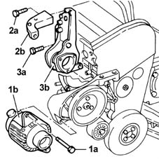
Applies to: engines: 1.9 JTD 8V; all production periods
1. Disconnect the water delivery hose to the water - oil heat exchanger from the thermostat well.
2. Disconnect the water outlet pipe from the water/oil heat exchanger from the manifold.
3. Unscrew the bolt for the hose carrying water to the water-oil heat exchanger.
4. Loosen collars (4a) on the water - oil heat exchanger and remove delivery and return lines (4b).
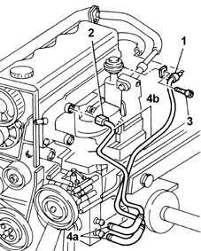
Applies to: engines: 1.9 JTD 8V; all production periods
1. Undo bolts (1a) and remove air conditioner compressor (1b).
2. Undo the bolts (2a) and remove the air conditioner compressor mounting (2b).
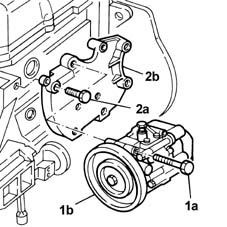
Applies to: engines: 1.9 JTD 8V; all production periods
1. Fit the tool for supporting the engine on the service stand.
| Name | Country |
|---|---|---|
1 | Brackets | 1.861.001.039 |
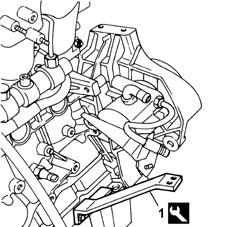
Applies to: engines: 1.9 JTD 8V; all production periods
—
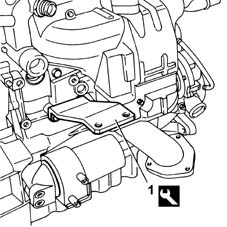
Applies to: engines: 1.9 JTD 8V; all production periods
Secure and support the engine for hoisting using a hydraulic hoist fitted with suitable chains.
Fit the engine to the service stand.
Release the engine from the hoist.
Drain engine oil from the plug on the oil sump.
Secure and support the engine for hoisting using a hydraulic hoist fitted with suitable chains.
Undo the fastenings and remove the engine complete with supporting tools from the service stand.
Stand the engine on the bench.
Release the engine from the hoist.
Undo the fastenings and remove the supporting tools.
| Name | Country |
|---|---|---|
1 | Brackets | 1.861.001.039 |
Fit the air conditioner compressor mount and secure using the relevant bolts.
Fit the air conditioner compressor mount and secure using bolts.
Connect the outlet and return pipes to the water - oil heat exchanger.
Tighten the bolt for the pipe carrying water to the water - oil heat exchanger.
Connect the pipe carrying water to the water - oil heat exchanger to the thermostat well.
Fit the intermediate shaft support and fix it using the bolts.
Fit the alternator rear bracket and secure with bolts, without tightening.
Fit the alternator and fix it using the bolts.
Tighten the rear alternator bracket bolts.
Fit the single engine component belt and place under tension by adjusting the automatic tensioner with a wrench.
Topics linked from this page (1)
Topics that link to this page (7)
- 1004E10 engine, removed - remove cylinder head and oil sump for inspection - includes positioning on stand and removal
- 1004E20 engine - dismantle and re-build following operation 1004e10 - wash and check dismantled parts - re-fit cylinder head and oil sump - does not include repairs to cylinder head and auxiliary unit
- 1004E60 COMPONENTS TRANSFER for lighter engine
- 1020A24 crank case oil sump - r + r clean seals for sealant application with engine removed
- 1020D17 engind front cover - r r
- 1032B16 toothed timing belt - r r with engine removed
- 1084B14 engine oil pump - r+r with power unit removed